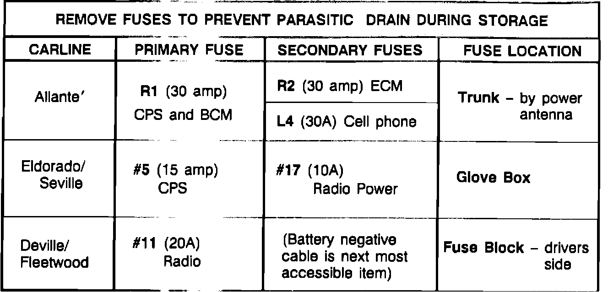

I.Battery Storage In Vehicle
Cadillacs have several electronic devices which result in very small but continuous current drains on batteries, commonly referred to as "parasitic loads". Parasitic loads may cause vehicles, not used for an extended period of time, to develop deeply discharged and/or permanently damaged batteries. Discharged batteries can freeze at temperatures as high as +20~F, causing permanent damage. Batteries that have been frozen should be scrapped. Never attempt to recharge or use a battery which has been frozen.To prevent frozen or damaged batteries, assure that the battery green dot is visible before storing the vehicle. The negative battery cable should be disconnected on vehicles which are not going to be in service within a 30-day period. If this is not possible, batteries should be recharged periodically, every 30-60 days, until the green dot is visible (see section on charging). NOTE:
Disconnecting the battery may disable any vehicle security/anti-theft systems!
NOTICE: The ignition switch, headlights, RAP, etc., must be off when connecting or disconnecting battery jumper cables or chargers. Failure to do so may overstress or damage the ECM or other electronic components. Disconnecting jumper cables with the engine running may cause voltage surges that could damage headlamp bulbs or other electronic components.
FIGURE 1 - RECOMMENDED FUSES TO PULL TO MINIMIZE PARASITICS DURING STORAGE:

When disconnecting the negative battery cable is not practical for storage, Figure 1 can be used to determine which fuses should be pulled to minimize the parasitic drain. The "Primary" fuse should be pulled and placed in a location in the vehicle where sales and service personnel can easily find and reinstall it.
The fuse-pull suggestions found below, in Figure 1, are not designed to completely eliminate parasitic load; only disconnecting the battery negative cable can accomplish this. Rather, it should help eliminate some of the major draws in a convenient manner.